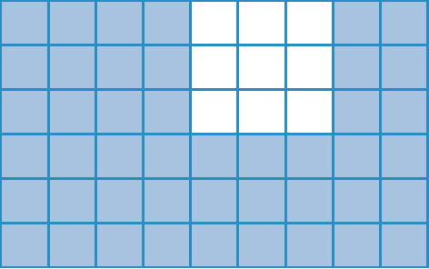

checkbox por id Para practicar para la evaluación Sistema de numeración 1. ¿Cuál de estos números es el dieciséis millones cincuenta y seis mil? 16.056.000 16.500.006 16.000.506 16.050.060 16.560.000 16.050.006 2. Decidí, sin hacer los cálculos, cuáles de estas expresiones corresponden al número 3.804.726. Marcalas. 3 x 1.000.000 + 8 x 100.000 + 4 x 1.000 + 7 x 100 + 2 x 10 + 6 3.804 x 1.000 + 72 x 100 + 6 38 x 100.000 + 4 x 1.000 + 7 x 100 + 2 x 10 + 6 380 x 1.000 + 4 x 1.000 + 43 x 10 + 6 3. ¿Cuáles de estos números pueden ser el resultado de una multiplicación por 100? Marcalos 17.709 800.008 19.000 159.000.090 2.000.000 4. Indicá cuáles de los siguientes cálculos permiten averiguar la cantidad de cuadraditos sombreados de la figura.  4 x 6 + 3 x 3 + 2 x 6 9 x 3 + 3 x 5 3 x 3 + 6 x 2 x 3 9 x 6 - 3 x 3 5. En una panadería colocaban 12 filas de 8 medialunas sobre una bandeja para hornearlas. Consiguieron una bandeja más grande, en la que se pueden colocar 6 filas completas más. ¿Cuál o cuáles de estos cálculos permiten averiguar cuántas medialunas van a entrar en total ahora? Marcalos 12 x 6 + 8 12 x 8 + 12 x 6 12 x 8 + 6 12 x 8 + 6 x 8 12 x 14 Múltiplos y divisores 6. Si en la calculadora vas sumando de 8 en 8 a partir de 0, ¿cuáles de los siguientes números van a aparecer? 160 161 320 322 480 488 7. Usando la calculadora, decidí cuáles de los siguientes números son múltiplos de 11. Marcalos 1.351 1.456 6.356 4.727 5.467 2.465 8. Decidí si las siguientes afirmaciones son verdaderas (V) o falsas (F). a. Si un número es múltiplo de otro, entonces la división del primero por el segundo da como resto 0. Verdadero Falso b. Un número más grande que otro tendrá siempre más divisores. Verdadero Falso c. La cantidad de múltiplos de un número es infinita. La cantidad de divisores de un número es infinita. Verdadero Falso 9. Sabiendo que 330 = 2 x 3 x 5 x 11, decidí cuáles de las siguientes afirmaciones son verdaderas. 330 es múltiplo de 11. 330 es múltiplo de 15. 5 es divisor de 330. 55 es divisor de 330. 10. Sabiendo que 216 = 9 x 2 x 3 x 4, decidí sin hacer las cuentas en cuáles de las siguientes divisiones el resto es 0. 216 : 7 216 : 5 216 : 13 216 : 12